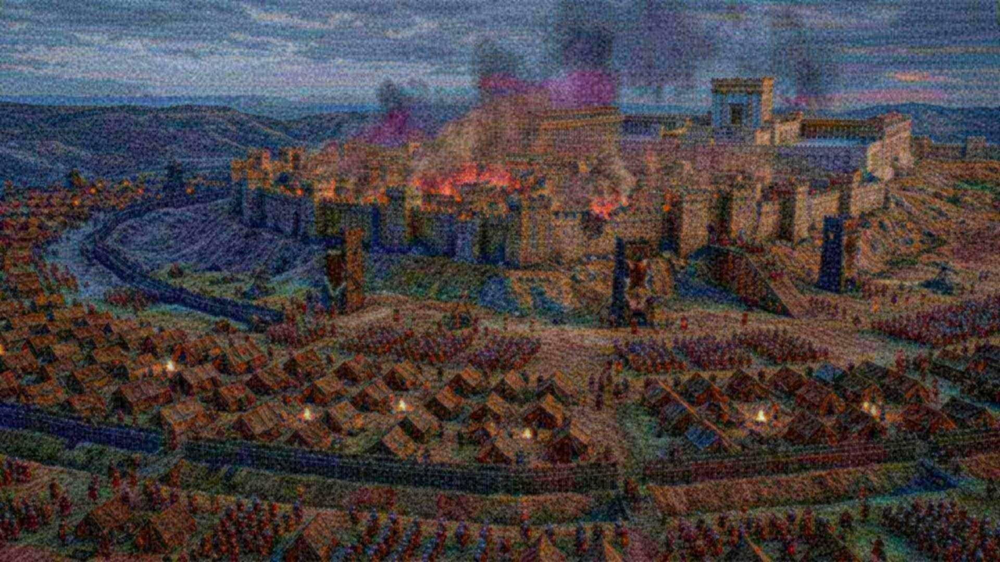

Salle 26 · Aile V — Les Prophéties
Jérusalem, an 70 : Jésus avait prévenu
Un signal pour fuir, trente-sept ans avant.
Pas une pierre ne restera sur une autre.Matthieu 24:2
Le propos
Jésus annonce un encerclement, une palissade de pieux, la destruction totale du temple et des captifs emmenés dans toutes les nations. En 66, Cestius Gallus se retire au moment décisif ; en 70, Titus enferme la ville dans un mur de circonvallation en trois jours. Le temple brûle. L’arc de Titus en montre le butin.
AccomplieLa prophétie
Jérusalem, an 70 : Jésus avait prévenu
Luc 19:41-44 ; 21:20-24 ; Matthieu 24:1, 2, 15-22
Ce qui est annoncé
- Jérusalem sera entourée d’un camp retranché.Luc 21:20
- Un signal précis est donné pour fuir : quand vous verrez cela, partez.Luc 21:20, 21 ; Matthieu 24:15-22
- Les ennemis élèveront autour d’elle une palissade de pieux.Luc 19:43
- Pas une pierre ne restera sur une autre du temple.Matthieu 24:2 ; Luc 19:44
- Des captifs seront emmenés dans toutes les nations.Luc 21:24
Ce qui s’est passé
En 66 de n. è., Cestius Gallus se retire brusquement alors que la ville était à sa merci : ceux qui suivirent la consigne purent fuir, et les chrétiens se retirèrent à Pella selon Eusèbe. En 70, Titus fait élever en trois jours un mur de circonvallation complet, la famine s’installe, le temple brûle. Le relief de l’arc de Titus montre le butin emporté.
Nuance honnête : Le retrait de Cestius Gallus est rapporté par Flavius Josèphe, historien du Ier siècle, dont le récit est notre principale source : la précision du signal reste appréciée différemment selon les auteurs.
Pièces à conviction
Arc de Titus
Relief du butin de Jérusalem : le chandelier à sept branches et les objets du temple emportés à Rome après 70 de n. è.
- Conservation
- Rome, Forum romain
- Inventaire
- arc de Titus, relief nord
- Datation
- ≈ 81 de n. è.
- Vérifier
- catalogue du musée
Siège de Jérusalem, récit de Flavius Josèphe
Flavius Josèphe, Guerre des Juifs V.12.2 : Titus fait élever en trois jours un mur de circonvallation complet autour de Jérusalem. Témoin du camp romain, il décrit aussi la famine et l’incendie du temple.
- Conservation
- Source littéraire antique
- Inventaire
- B.J. V.12.2
- Datation
- ≈ 75 de n. è.
- Vérifier
- référence en collection
Fuite des chrétiens à Pella
Eusèbe de Césarée, Histoire ecclésiastique III.5.3 : les disciples quittent Jérusalem avant le siège et se retirent à Pella, en Pérée.
- Conservation
- Source littéraire antique
- Inventaire
- H.E. III.5.3
- Datation
- IVᵉ s. de n. è.
- Vérifier
- référence en collection
Objections honnêtes
Mais certains disent…
La science n’a-t-elle pas rendu Dieu inutile ?
La science décrit comment les choses fonctionnent ; elle ne dit pas pourquoi il y a quelque chose plutôt que rien. Un astronome qui mesure la composition d’une étoile ne prétend pas expliquer pourquoi les lois de la physique existent. Les deux questions sont différentes, et la seconde reste ouverte.
Le « réglage fin » n’est-il pas un argument trompeur ?
L’argument a des limites, et le site les expose : certaines marges sont plus larges qu’on ne le dit souvent, des prépublications récentes contestent des estimations classiques, et le multivers est une réponse possible — non observable, et qui doit elle-même être réglée. Ce qui reste solide, c’est le fait mesuré : les valeurs sont ce qu’elles sont, et une vie exigeante en dépend.
Pourquoi tant de souffrance si un Créateur bienveillant existe ?
C’est l’objection la plus sérieuse, et le site ne la minimise pas. La Bible ne présente pas la souffrance comme voulue par Dieu : elle l’attribue à la rébellion, au mauvais usage de la liberté et à un adversaire. Elle annonce aussi sa fin (Révélation 21:4 ; Isaïe 33:24). Une réponse de ce type demande une confiance ; elle ne se décrète pas.
Les prophéties n’ont-elles pas été écrites après les événements ?
C’est une objection légitime, et le site y répond par les manuscrits : les rouleaux de Qumrân datent d’avant le Ier siècle pour Isaïe et d’avant la fin du IIᵉ siècle av. n. è. pour Daniel. Cela prouve l’ancienneté des copies, pas nécessairement la date de composition : la critique universitaire situe souvent Daniel au IIᵉ siècle. Le site affiche ce désaccord au lieu de l’éviter.